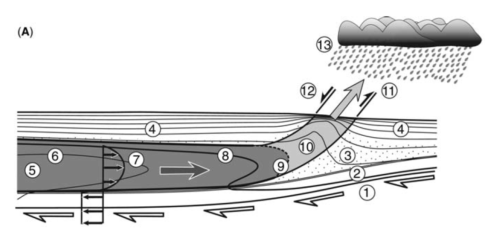

FD for Stokes equation¶
The finite differences method can be applied to the equations of momentum and continuity (the Stokes equation) to study the flow of a fluid.
The equation for conservation of momentum is
where \(\underline{\underline{\sigma}} = \eta(\nabla\underline{v}+(\nabla\underline{v})^T) - P\underline{\underline{I}}\) is the stress tensor and \(\underline{f}\) are the body forces.
This can be written, in two dimensions, separately in x- and y-directions as
The continuity equation, conservation of mass, or the assumption of incompressibility, is
These three equations are readily discretized using finite differences. Note that there are no time derivatives, but instead two spatial derivatives, in \(x\) and in \(y\)-direction.
Channel flow¶
We will apply the Stokes equation to the case of orogenic channel flow. The mid- and lower crust in the internal parts of large orogenies might be partially molten due to the increased temperatures by thickened crust and increased radiogenic heating. These parts of the crust might be flowing, due to the pressure gradients imposed by the mountains, towards the thinner crust surrounding the orogeny.

Orogenic channel flow (Godin et al. 2006). Pressure gradients drive flow to right, underthrusting plate imposes shearing flow towards left.
We want to construct a one-dimensional model of this flow, by considering the horizontal velocities at different depths within the channel, and assuming that there is no vertical flow.
Since \(v_y=0\) everywhere, we can disregard the second momentum equation (y-direction). In the continuity equation \(\frac{\partial v_y}{\partial y}=0\) leading to \(\frac{\partial v_x}{\partial x}=0\). Thus, the first momentum equation becomes
The value of the pressure gradient can be calculated based on the estimated lithostatic pressure difference between the channel under thick orogenic crust and the surrounding region: If we consider the extra topography by the mountain range to be \(h=4000~\mathrm{m}\), and their horizontal extent to be \(d=500~\mathrm{km}\), we get \($\frac{\partial P}{\partial x}\approx \frac{h \rho g}{d} = 219~\mathrm{Pa~m^{-1}} $\)
The second derivative of the velocity in respect to \(y\) can be discretized using central difference, leading to: ???
Do¶
Discretize the second velocity derivative and write the whole momentum equation in x-direction
Sketch a grid with five grid points. Mark the surface and bottom grid points that will be assigned a velocity value by the boundary conditions.
Looking at the figure above, what kind of B.C. are needed?
How would you use your discretized equation to calculate \(v_1\), the first velocity value after the uppermost grid point?